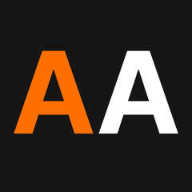

AIbiz
Akademia Automatyzacji
Mapowanie procesów
pod automatyzację
Komplet materiałów do dwugodzinnego warsztatu — prezentacja, dwa pełne case study z różnych branż oraz diagramy procesów AS-IS i TO-BE w notacji BPMN.
Zawartość
01 / Prezentacja
Prezentacja warsztatu
Pełna prezentacja w trybie fullscreen — frameworki mapowania, narzędzia, podejście, dobre praktyki. Sterowanie strzałkami lub spacją.
Otwórz prezentację
02 / Case Study #1
Agencja marketingowa
Proces sprzedażowy 15-osobowej agencji „BrandUp": leady wpadają w dziury, oferty czekają 3-5 dni, follow-upy zapominane. Mapowanie AS-IS i propozycja TO-BE.
Zobacz case study
03 / Case Study #2
E-commerce GreenNest
Sklep z akcesoriami do domu i ogrodu, 500 SKU, 3 kanały sprzedaży. Overselling na Allegro, Excel jako jedyny „system", właściciel jako wąskie gardło. AS-IS → TO-BE.
Zobacz case study